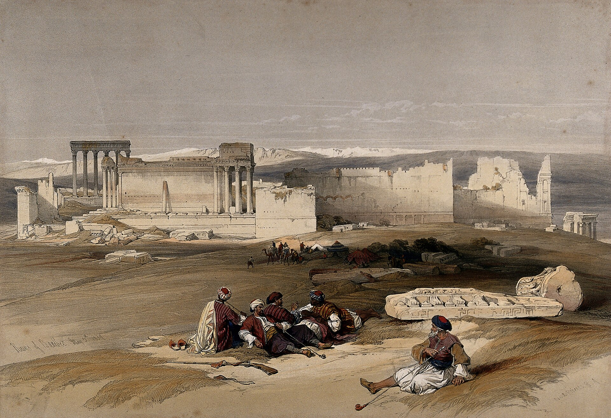

The food road trip مشوار الأكل
From the coast to the Beqaa.
Lebanon is small enough to have breakfast by the sea and lunch in the mountains. Every town on the road has a plate it is proud of. Here is what to order at each stop.
Behind: the ancient city of Baalbec, coloured lithograph by Louis Haghe after David Roberts, 1843. Wellcome Collection, public domain

The stops المحطات
Six cities, six plates.
Up the coast, then over the mountains to the Beqaa. The pictures are real photographs of each place.